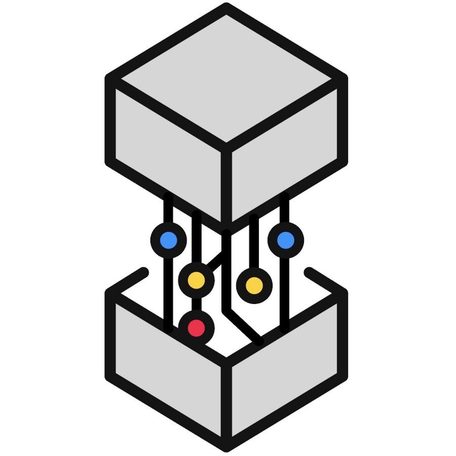

Software Developer
About Me
Hey, I'm Gavin, an Electrical Engineer from Canada. I'm pursuing my 4th year of Electrical Engineering in the Innovation & Entrepreneurship Stream at Queen's University. Currently, I'm seeking Software Developer New Grad opportunities starting in May 2023.
Previously, I worked at Mitsubishi Heavy Industries RJ as a Full Stack Developer, where I built two revenue generating services in the form of SPAs(single page applications). The first SPA was developed with the goal of providing airline operators with visibility of their data and traceability of their aircraft components. The second SPA was created for internally forecasting the future maintainence demands of the aircraft fleet.
I have also worked wthin the Federal Government of Canada as a Junior Analyst for Shared Services Canada. Within this role, my team and I were responsible for maintaining the IT infrasturcture for other federal departments along with developing the mangerial frameworks that get implmented within the Government of Canada. Here are some technologies I've been working with recently:
Past Experience
MHI RJ Aviation ULC:
Previously, I worked at Mitsubishi Heavy Industries RJ as a Full Stack Developer, where I built two revenue generating services in the form of SPAs(single page applications). The first SPA was developed with the goal of providing airline operators with visibility of their data and traceability of their aircraft components. The second SPA was created for internally forecasting the future maintainence demands of the aircraft fleet.
Shared Services Canada:
I have also worked wthin the Federal Government of Canada as a Junior Analyst for Shared Services Canada. Within this role, my team and I were responsible for maintaining the IT infrasturcture for other federal departments along with developing the mangerial frameworks that get implmented within the Government of Canada.
Personal Projects
 Twitter Stream with a Discord bot:
Twitter Stream with a Discord bot:
I implemented the Twitter Stream API within a Discord bot. This enabled the bot to filter all new Tweets for specific key words and other requirements, then pass the Tweet URL to a Discord channel.
 Web-Scraping:
Web-Scraping:
I utilized the features of BeautifulSoup, to web scrape Software related Jobs on Craigslist and for Software APIs on Programmable Web.
 Reach:
Reach:
Reach is designed to be a social media-based platform for the aggregation of all event planning. My main role was as a front-end developer that used the Flutter SDK.
 QMIND-Pelmorex Data Solutions:
Queen's Machine Intelligence and Neuroevolution Design, QMIND, is a student-run AI organization which encompasses several design teams focused on developing industry solutions using machine learning and artificial intelligence. I have collaborated on a project with Pelmorex Data Solutions. My role within this project was to conduct preprocessing of data. I used SQL to sort through and remove unnecessary or incomplete data. I also worked on the distance optimization algorithm, used in the project.
Quantt:
Queen’s algorithmic network and trading team. My role within this project was to conduct research on and implement viable trading strategies. I primarily worked with candlestick patterns and implementing those into our predictive model.